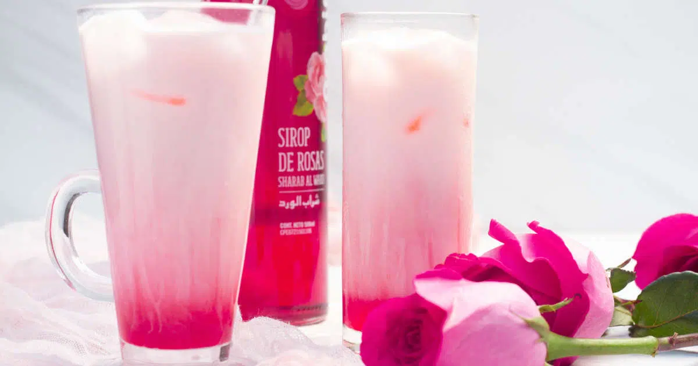

Back to Drinks
Sirap Bandung

Ingredients
1 cup rose syrup
1 cup evaporated milk
2 cups water
Ice cubes
Instructions
In a jug, mix rose syrup, evaporated milk, and water until well combined.
Pour into glasses over ice cubes.
Serve chilled for a refreshing drink.